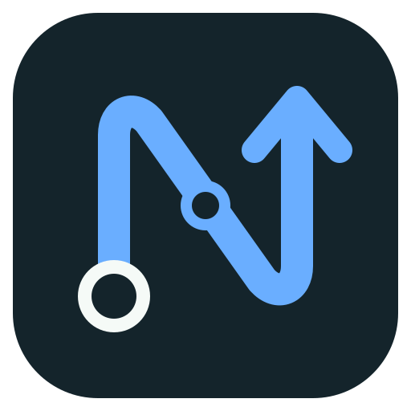
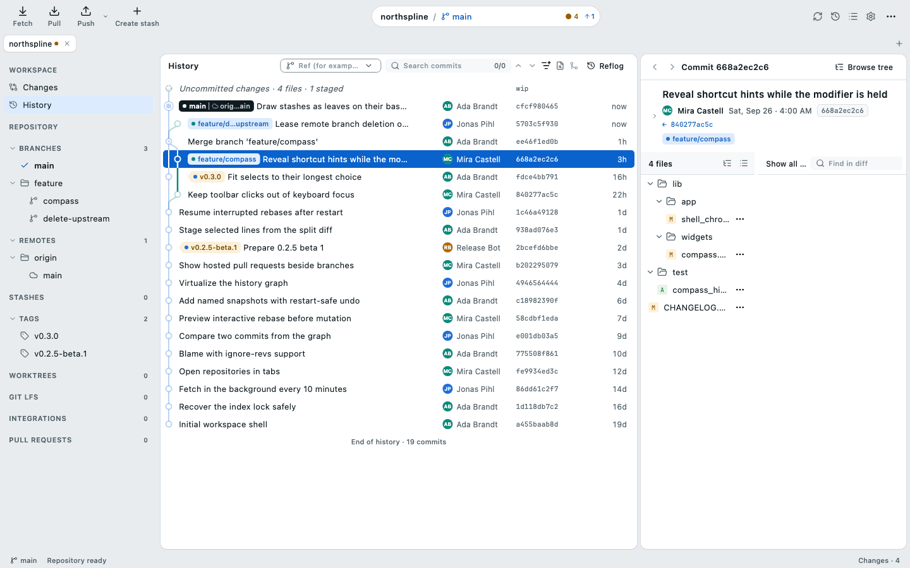

Changes that stay exact
Stage files, hunks or single lines. Read unified, split, image and encoding-aware diffs. Commit with amend, sign-off, hooks, templates and co-authors.

Desktop Git for macOS, Linux and Windows
History, changes and recovery in one calm, fast workspace. Stage exact lines, reshape commits, manage branches and remotes, and review hosted work without losing sight of what Git is really doing.
Free software under GPL-3.0. Built with Flutter and Rust.

One window: the repository on the left, the history graph in the middle, the selected commit on the right.
Implemented workflows
The everyday Git loop, plus the advanced operations that usually send you back to the terminal.
Stage files, hunks or single lines. Read unified, split, image and encoding-aware diffs. Commit with amend, sign-off, hooks, templates and co-authors.
A virtualized spline graph for histories of any size, with trees, blame and reflog. Compare commits, search content and run a guided bisect.
Create, rename, merge, cherry-pick and revert. Preview interactive rebase, autosquash and stacked-branch restacks before anything changes.
Fetch, pull and push with explicit force-with-lease. Connect GitHub, GitLab, Forgejo or Codeberg for pull requests and review drafts.
Manage worktrees, submodules and Git LFS. Wire up your editor, terminal, diff and merge tools, and confirmed custom commands.
Resume conflicts and rebases after a restart, keep named snapshots and repository-scoped undo, and see uncertain outcomes stated plainly.
Designed around the graph
Your own line of work always runs in the first lane. Branches leave and rejoin it on smooth splines, so merges read at a glance, even in long histories.
Verified releases
Downloads appear only after signed metadata and every retained public release asset pass byte-for-byte verification.
Each release publishes detached Ed25519 metadata and SHA-256 package identities. View the public verification key.